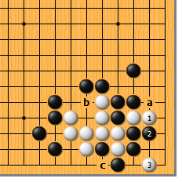
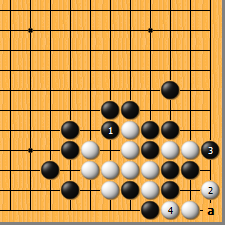
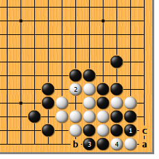

|  |  | |
| 图1 白1长，是所谓“棋从断处生”的想法。黑2从里面挡，必然。黑2如于a位挡，白b做眼，黑明显不能c位粘。对此，白3点，为绝妙手！
| 图2 黑1如破眼，白2尖，好手！黑3虽可抱吃，白4断，不但断出一眼，a位再成一眼，净活。角的特殊性在这里被利用得淋漓尽致。 | |
|  | 您的高见 | |
| 图3 黑1如团，也是顽强的下法。对此，白2做眼，黑如3位粘，白4扑入，黑a提，白4再扑。如此，黑三子被吃。白4如不扑而直接于b位打，黑4位粘，白只好c位做劫，不满。 |